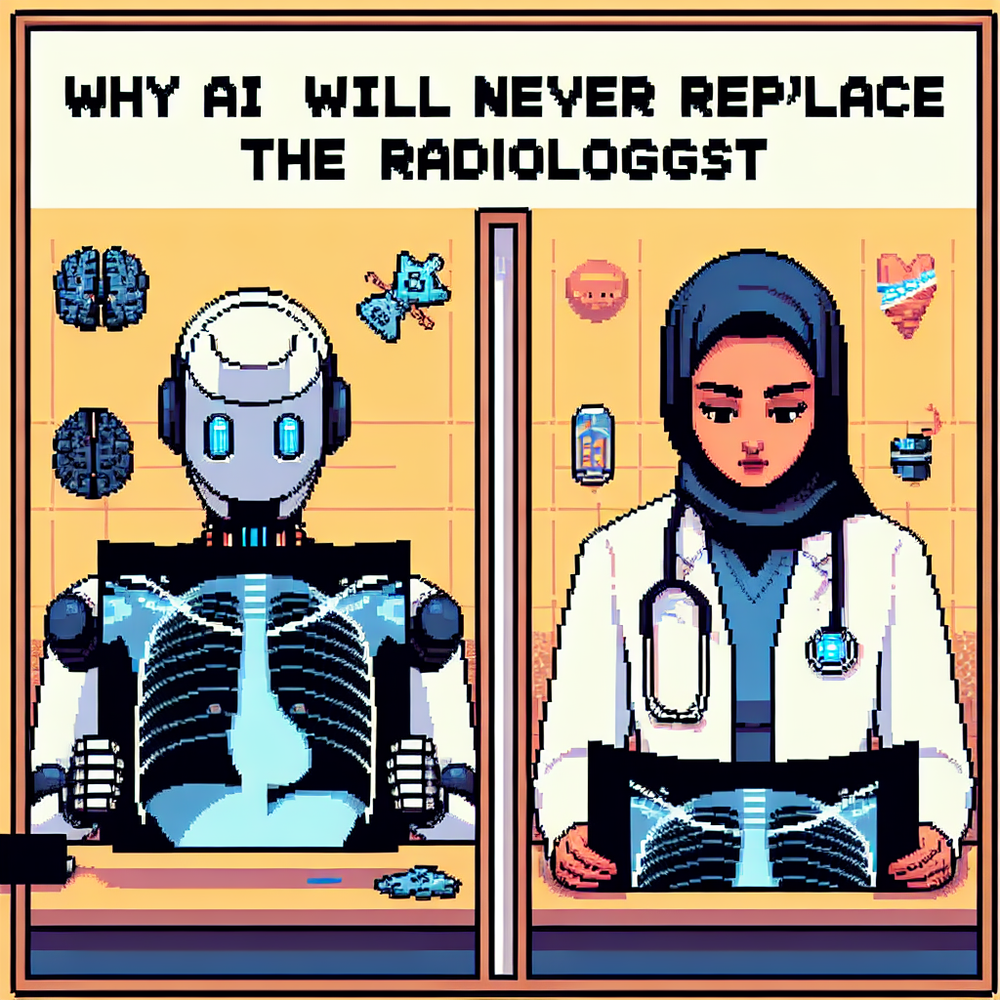

Why AI will never replace the radiologist
In his latest blog post on Jan 31, 2023, titled "Why AI will never replace the radiologist," Python instructor Jose delves into the intersection of technology, machine learning, and radiology. Jose shares his insights on the limitations of machine learning in the field of radiology and explains why he believes that artificial intelligence will never fully replace the expertise of a radiologist.
As someone deeply involved in teaching machine learning, Jose brings a unique perspective to this topic. By highlighting the potential drawbacks and challenges associated with relying solely on AI for radiological interpretations, he sparks a thought-provoking discussion on the role of technology in healthcare.
Readers interested in the evolving landscape of technology in medicine, particularly in the realm of radiology, will find Jose's blog post to be an insightful and engaging read. Stay tuned for more thought-provoking content from this tech-savvy Python instructor!